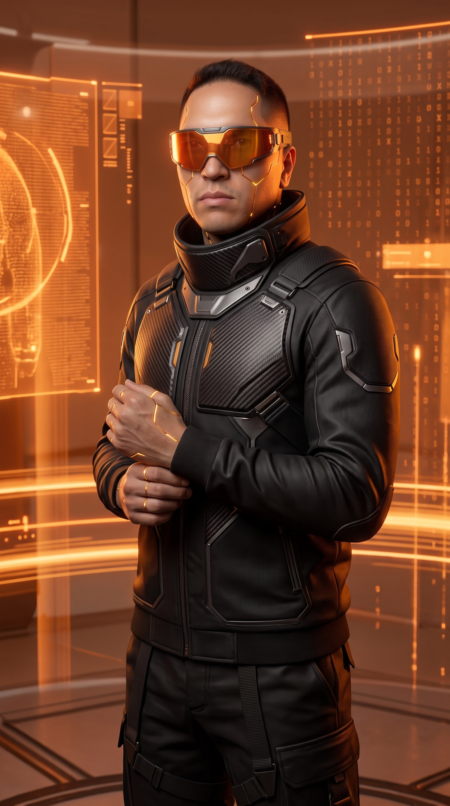

De una idea a una identidad consistente. De la identidad a una presencia digital. De la presencia a sistemas que trabajan solos. Amante del conocimiento más que de la formación en el aula - hoy la IA es la herramienta que permite llevar una idea a la realidad.
Buscando un rol estable en Dirección de Arte o Estratega Digital
Liderazgo estratégico en branding y dirección de arte para +20 marcas escaladas en Colombia, España y EE.UU. Gestión de cuentas con 100% de crecimiento orgánico. Automatización de contenido con N8N e integración de APIs.
Diseño y creación de contenido para redes sociales, diagramación y cambios regulares en páginas web para Colombia y EE.UU.
Creación de branding, reestructuración de marcas y manuales corporativos. Diseño de contenido y páginas web para Colombia, Venezuela, Panamá y Costa Rica.
Creación de branding y parrilla de contenido mensual para diversas marcas en colombia y estados unidos.
Creación de contenido de marcas, digitalización del servicio y atención al cliente.
Creación de material POP papeleria corporativa y material de difusión y promoción para diversas marcas nacionales.